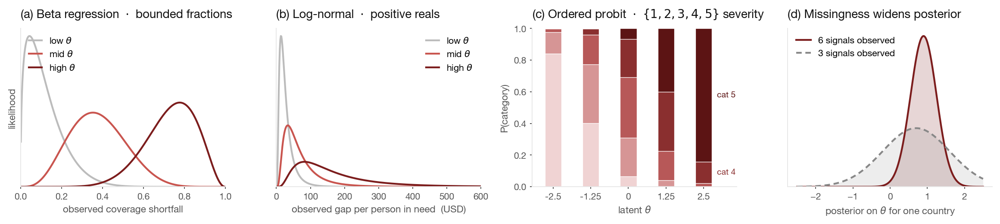

Every response is underfunded.
A single coverage ratio no longer separates three kinds of neglect.
for 135 M people in need
lowest in a decade
up from 8 in 2021
Forgotten
Angola 2023 — 7 M affected, 1,049 news articles.
Contested
Sudan 2025 — world's largest displacement, still fell to 35 % covered.
Sector-starved
60 % overall can mask a health cluster at 20 %.
Don't score. Infer.
Treat overlookedness as one unobserved number per country, $\theta$. Infer its posterior from six signals, each with a likelihood matched to its natural range.

Directions we know
Each slope $\beta_i$ — how strongly a signal raises $\theta$ — is fixed positive. A bigger funding gap can only mean more overlooked.
Honest uncertainty
Sparse-data countries pool toward the global mean; credible intervals widen automatically when evidence is thin.
Mask, never impute
Missing signals widen the posterior, never shift it. No fabricated values in the fit.
No magic numbers.
Seventy-one properties across five levels. Each declares its formula, source, and known failure modes before it's computed. Nothing reaches a slide unless it's in the ontology.
Twenty-two crises on one overlookedness axis.
Agencies disagree on what should count, not on the answer.
Against independent expert consensus.
Two independently curated expert lists, neither seen during fitting. A naïve mean of the six signals on the same pool is our floor.
| Benchmark | $k$ | Bayesian | Naïve mean |
|---|---|---|---|
| CERF UFE 2024 w2 | 10 | 3/10 | 3/10 |
| CERF UFE 2025 w1 | 10 | 5/10 | 5/10 |
| CERF UFE 2025 w2 | 7 | 2/7 | 1/7 |
| CARE BTS 2024 | 10 | 3/10 | 1/10 |
Held out in time. A 2024-only fit predicts CERF's March-2025 picks at 4/10, with no 2025 data seen.
Calibration. Our 3-second variational fit is validated against exact MCMC every run: Spearman $\rho = 0.89$, CI widths within $2\times$.

Forecasting severity twelve months out.
A 19k-parameter selective state-space model — Mamba — reads 24 months of INFORM and predicts the mean severity of the next twelve. No funding data, no $\theta$, no priors. Temporal split at January 2025.
Twenty-two is where the data lands.
Why twenty-two
Eligibility: a formal needs assessment and a funding request. The same pool CERF itself draws from.
Eight benchmark picks sit outside (AGO, BDI, ETH, MDG, MRT, MWI, SYR, ZMB) — six lack a response plan; two have no 2025 needs data.
Expanding the gate degrades precision @ $k$. Twenty-two is not a cap — it's where the data lands.
What comes next
Calibrated agency priors
Regress real allocation histories on the six signals to recover each agency's priors empirically.
Temporal AR(1) on $\theta$
Chronic and acute fall out of one posterior, anchored by monthly INFORM.
Longer monthly panel
The encoder only beats persistence at 12 months. More history per country is the unlock — not a bigger model.